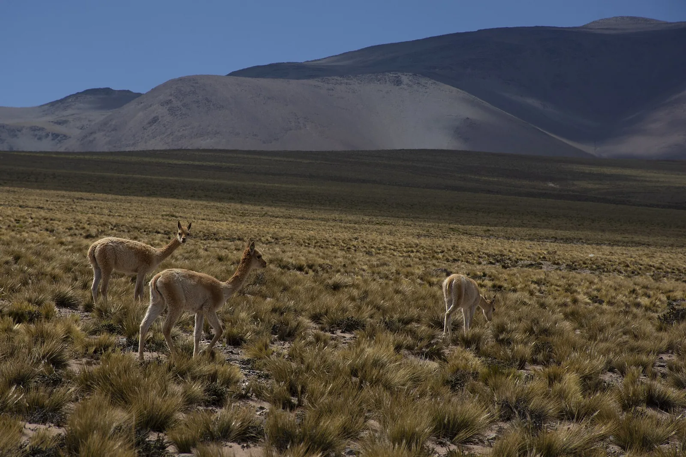
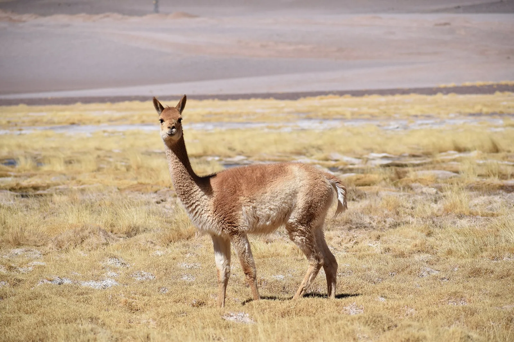

O3 · Oeste
O3 · Westen
O3 · West
Salinas Grandes
Vi las Salinas Grandes, un desierto de sal interminable que de noche parece que uno puede caminar por las estrellas. Conocí a las vicuñas y los zorros responderse sus cantos.
Ich sah die Salinas Grandes, eine endlose Salzwüste, in der es nachts aussieht, als könnte man über die Sterne gehen. Ich lernte die Vikunjas kennen und die Füchse, die einander ihre Rufe beantworten.
I saw the Salinas Grandes, an endless desert of salt where at night it looks as if you could walk on the stars. I met the vicuñas and the foxes answering each other's calls.
Información
Information
Information
Vi el mismo desierto de sal perforado, buscando el litio que duerme debajo. Donde ya lo sacan, los salares se hunden y el agua se evapora por millones de litros, mientras a los que viven ahí se les seca el pozo. Vi a los flamencos quedarse sin las lagunas donde anidaban. Y vi a los que cortan la sal a mano salir a la ruta a defender su agua, y los vi golpeados. Vi a la vicuña, que estuvo a punto de desaparecer y volvió, caer otra vez por su lana. Vi zorros colgados de los alambrados.
Ich sah dieselbe Salzwüste durchbohrt, auf der Suche nach dem Lithium, das darunter schläft. Wo sie es schon herausholen, sinken die Salzseen ab und verdunstet das Wasser in Millionen Litern, während denen, die dort leben, der Brunnen austrocknet. Ich sah die Flamingos ohne die Lagunen zurückbleiben, in denen sie nisteten. Und ich sah die, die das Salz von Hand schneiden, auf die Straße gehen, um ihr Wasser zu verteidigen, und ich sah, wie sie geschlagen wurden. Ich sah das Vikunja, das fast verschwunden war und zurückkam, wieder fallen, seiner Wolle wegen. Ich sah Füchse an den Drahtzäunen hängen.
I saw the same desert of salt drilled through, hunting the lithium that sleeps beneath it. Where they already take it out, the salt flats sink and the water evaporates by the million litres, while those who live there watch their well run dry. I saw the flamingos left without the lagoons where they used to nest. And I saw those who cut the salt by hand go out to the road to defend their water, and I saw them beaten. I saw the vicuña, which had almost disappeared and came back, fall again for its wool. I saw foxes hanging from the wire fences.
El litio de los salares se extrae por evaporación: se bombea la salmuera a piletas y se deja que el sol haga el resto. Según trabajos de investigadores del CONICET, por cada tonelada de litio obtenida de ese modo se evaporan alrededor de dos millones de litros de agua.
En una región donde el agua es escasa, eso puede secar las vegas y los ojos de agua de donde salen los pequeños acuíferos que se usan para el pastoreo y la agricultura. Las comunidades de la Mesa de Salinas Grandes, junto con la Comisión Internacional de Juristas, plantean que privarlas del agua o del uso del salar vulnera derechos humanos fundamentales.
El litio de los salares se extrae por evaporación: se bombea la salmuera a piletas y se deja que el sol haga el resto. Según trabajos de investigadores del CONICET, por cada tonelada de litio obtenida de ese modo se evaporan alrededor de dos millones de litros de agua.
En una región donde el agua es escasa, eso puede secar las vegas y los ojos de agua de donde salen los pequeños acuíferos que se usan para el pastoreo y la agricultura. Las comunidades de la Mesa de Salinas Grandes, junto con la Comisión Internacional de Juristas, plantean que privarlas del agua o del uso del salar vulnera derechos humanos fundamentales.
El litio de los salares se extrae por evaporación: se bombea la salmuera a piletas y se deja que el sol haga el resto. Según trabajos de investigadores del CONICET, por cada tonelada de litio obtenida de ese modo se evaporan alrededor de dos millones de litros de agua.
En una región donde el agua es escasa, eso puede secar las vegas y los ojos de agua de donde salen los pequeños acuíferos que se usan para el pastoreo y la agricultura. Las comunidades de la Mesa de Salinas Grandes, junto con la Comisión Internacional de Juristas, plantean que privarlas del agua o del uso del salar vulnera derechos humanos fundamentales.
Galería
Galerie
Gallery



Fuentes
Quellen
Sources
- CONICET, Entre el boom del litio y la defensa de la vida: salares, agua, territorios y comunidades — https://ri.conicet.gov.ar/handle/11336/130604 consultado 2026-10-05abgerufen 2026-10-05accessed 2026-10-05
- CONICET, El litio: desde los salares de la Puna a nuestros celulares (PDF) — https://ri.conicet.gov.ar/bitstream/handle/11336/2588/de%20la%20Hoz%20et%20al%20(2013)%20El%20litio%20-%20desde%20los%20salares%20de%20la%20Puna%20a%20nuestros%20celulares.pdf?sequence=4 consultado 2026-10-05abgerufen 2026-10-05accessed 2026-10-05